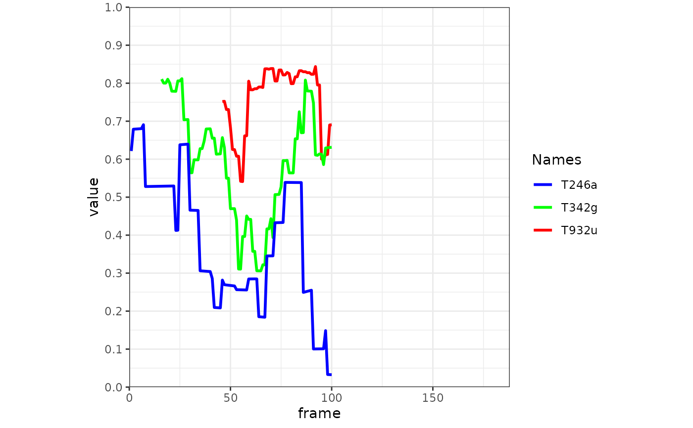
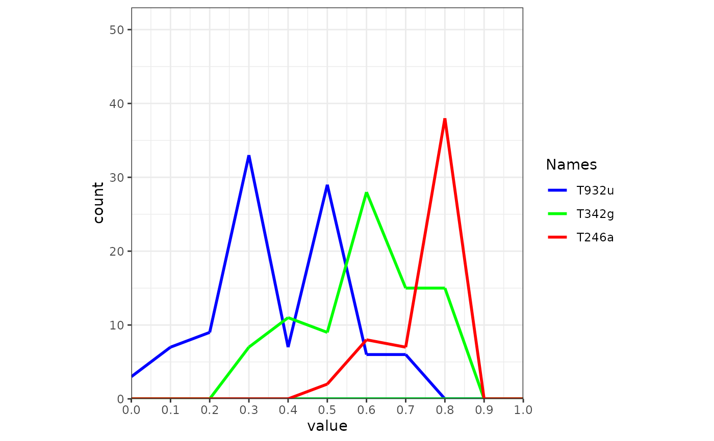
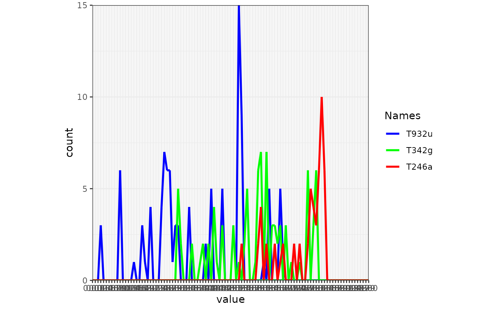
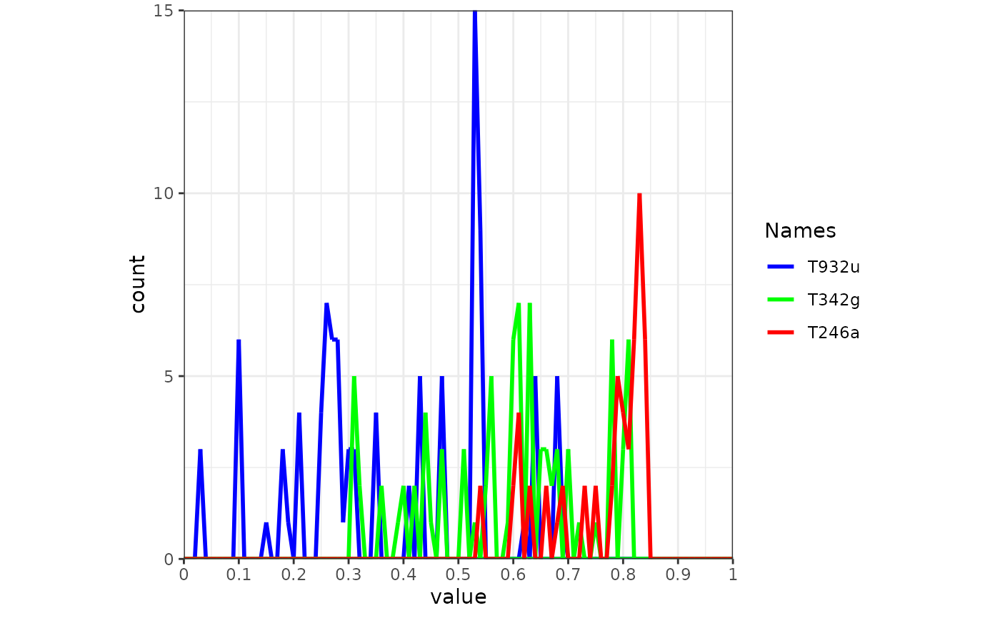

Create frames of movement-environment interaction graphs for animation
frames_graph.Rdframes_graph creates a list of ggplot2 graphs displaying movement-environment interaction. Each object represents a single frame. Each frame can be viewed or modified individually. The returned list of frames can be animated using animate_frames.
Usage
frames_graph(
m,
r,
r_type = "gradient",
fade_raster = FALSE,
crop_raster = TRUE,
return_data = FALSE,
graph_type = "flow",
path_size = 1,
path_colours = NA,
path_legend = TRUE,
path_legend_title = "Names",
val_min = NULL,
val_max = NULL,
val_by = 0.1,
...,
verbose = T
)Arguments
- m
move2object of uniform time scale and time lag as returned byalign_move. Can contain a column namedcolourto control path colours (see details below).- r
terraobject, either aSpatRaster(mono-temporal) or aSpatRasterDataset(multi-temporal). In case of the latter, times of `r` must be defined as 'POSIXct' (seetimeand details below).- r_type
character, either
"gradient"or"discrete". Ignored, ifrcontains three bands, which are treated as RGB.- fade_raster
logical, if
TRUE,ris interpolated over time. IfFALSE,relements are assigned to those frames closest to the equivalent times ofr.- crop_raster
logical, whether to crop rasters in
rto frame extents before plotting or not.- return_data
logical, if
TRUE, instead of a list of frames, adata.framecontaining the values extracted fromr_listper individual, location and time is returned. Thisdata.framecan be used to create your own multi- or mono-temporalggplot2movement-environemnt interaction graphs.- graph_type
character, defines the type of multi-temporal graph that should be drawn as frames. Currently supported graphs are:
"flow", a time flow graph with frame time on the x axis and values of the visited cell at x on the y axis per individual track"hist", a cumulative histogram with cell values on the x axis and time-cumulative counts of visits on the y axis per individual track.
- path_size
numeric, size of each path.
- path_colours
character, a vector of colours. Must be of same length as number of individual tracks in
mand refers to the order of tracks inm. If undefined (NA) andmcontains a column namedcolour, colours provided withinmare used (see details). Othwersie, colours are selected from a standard rainbow palette per individual track.- path_legend
logical, wether to add a path legend from
mor not. Legend tracks and colours will be ordered by the tracks' temporal apperances, not by their order inm.- path_legend_title
character, path legend title. Default is
"Names".- val_min
numeric, minimum value of the value axis. If undefined, the minimum is collected automatically.
- val_max
numeric, maximum value of the value axis. If undefined, the maximum is collected automatically.
- val_by
numeric, increment of the value axis sequence. Default is 0.1. If
graph_type = "discrete", this value should be an integer of 1 or greater.- ...
additional arguments, currently unused.
- verbose
logical, if
TRUE, messages and progress information are displayed on the console (default).
Value
An object of class moveVis. If return_data is TRUE, a data.frame is returned (see return_data).
Details
To later on side-by-side join spatial frames created using frames_spatial with frames created with frames_graph for animation,
equal inputs must have been used for both function calls for each of the arguments m, r_list, r_times and fade_raster.
If argument path_colours is not defined (set to NA), path colours can be defined by adding a character column named colour to m, containing a colour code or name per row (e.g. "red". This way, for example, column colour for all rows belonging to individual A can be set to "green", while column colour for all rows belonging to individual B can be set to "red".
Colours could also be arranged to change through time or by behavioral segments, geographic locations, age, environmental or health parameters etc. If a column name colour in m is missing, colours will be selected automatically. Call colours() to see all available colours in R.
Examples
library(moveVis)
library(move2)
library(terra)
data("move_data", package = "moveVis")
r <- readRDS(example_data(file = "raster_NDVI.rds"))
# align movement
m <- align_move(move_data, res = units::set_units(4, "min"))
#> Temporal resolution of 4 [min] is used to align trajectories.
# create frames
frames <- frames_graph(
m, r, r_type = "gradient", fade_raster = TRUE, graph_type = "flow"
)
#> Processing input data...
#> Approximated animation duration: ≈ 7.52s at 25 fps using 188 frames
#> Extracting raster values per frame...
# take a look
frames[[100]]

# make a histogram graph:
frames <- frames_graph(
m, r, r_type = "gradient", fade_raster = TRUE, graph_type = "hist"
)
#> Processing input data...
#> Approximated animation duration: ≈ 7.52s at 25 fps using 188 frames
#> Extracting raster values per frame...
frames[[100]]

# change the value interval:
frames <- frames_graph(
m, r, r_type = "gradient", fade_raster = TRUE, graph_type = "hist",
val_by = 0.01
)
#> Processing input data...
#> Approximated animation duration: ≈ 7.52s at 25 fps using 188 frames
#> Extracting raster values per frame...
frames[[100]]

# manipulate the labels, as they are quite dense by replacing the scale
frames <- add_gg(frames, rlang::expr(
scale_x_continuous(breaks=seq(0,1,0.1), labels=seq(0,1,0.1), expand = c(0,0)))
)
frames[[100]]

# to make your own graphs, use frames_graph to return data instead of frames
graph_data <- frames_graph(
m, r, r_type = "gradient", fade_raster = TRUE, return_data = TRUE
)
#> Processing input data...
#> Approximated animation duration: ≈ 7.52s at 25 fps using 188 frames
#> Extracting raster values per frame...